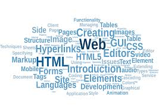

Understanding Semantic HTML
Core Concepts
The web is more than a collection of visually formatted documents. HTML provides meaning and structure to content so that browsers, search engines, assistive technologies, and people can better understand how information is organized.
HTML stands for HyperText Markup Language. It describes the structure and meaning of content rather than how that content should look. CSS is generally responsible for presentation, while JavaScript can add behavior and interactivity.
Why Semantics Matter
Semantic HTML uses elements according to the meaning of the content they contain. Choosing an element because of what it represents, rather than because of its default appearance, produces documents that are easier to understand and maintain.
Semantic structure is especially important for accessibility. Screen readers and other assistive technologies can use the structure of a document to help users navigate between major regions, headings, lists, and other types of content.
Developers should not choose HTML elements simply because they make text bold, italic, large, or small. The meaning of the content should determine the markup. Visual appearance can be controlled separately with CSS.
The WAI develops standards and supporting materials that help make the web more accessible to people with disabilities.
Common Principles for Well-Structured Pages
- Use headings to create a logical outline of the document.
- Organize related content into meaningful sections.
- Use lists when a collection of items has a clear relationship.
- Provide useful text alternatives for meaningful images.
- Use links that clearly describe their destination or purpose.
- Keep document structure separate from visual presentation.
Steps for Reviewing an HTML Document
- Identify the major regions of the page.
- Check that headings create a logical hierarchy.
- Review lists, quotations, abbreviations, and other specialized content.
- Confirm that images have appropriate alternative text.
- Inspect the document for unnecessary or incorrectly used elements.
- Run the completed page through an HTML validator.
Useful HTML Terms
- Element
- A structural or semantic component of an HTML document. Examples include headings, paragraphs, links, and lists.
- Attribute
- Additional information placed on an HTML element. Attributes can describe characteristics such as a link destination, an image source, or the language of a document.
- Semantic HTML
- The practice of choosing HTML elements based on the meaning and purpose of the content they contain.
- Validation
- The process of checking markup against the rules of the HTML specification to identify errors and invalid structures.
- Progressive Enhancement
- An approach to web development that begins with meaningful, accessible content and functionality before adding more advanced presentation or behavior.
Writing Code Clearly
HTML documents are easier to maintain when developers follow
consistent formatting conventions. For example, a developer
might use the code fragment
class="featured" to identify a particular
classification within a document.
When referring to code in technical writing, it is important to distinguish the code itself from the surrounding explanation.
A Perspective on the Web
Tim Berners-Lee has emphasized that the value of the web comes from its ability to connect people and information.
“The power of the Web is in its universality. Access by everyone regardless of disability is an essential aspect.”
This statement appears in materials from the W3C and reflects an important principle behind accessible web development.
Semantic Structure in Practice
A well-structured page does not need to be visually complicated. Even a simple article can contain several meaningful regions. The page might begin with introductory information and navigation, followed by its primary content. Within that content, related topics can be grouped together while still belonging to a larger article.
The distinction between structure and appearance is important. A heading is not simply large text. A quotation is not simply indented text. Important content is not simply bold text. Each has meaning that can be represented directly in HTML.

Recommended Resources
About This Site
Web Foundations is a learning resource for students studying modern front-end development. The material emphasizes standards-based development, semantic HTML, accessibility, and the use of the native web platform.
Content prepared for Web Foundations.